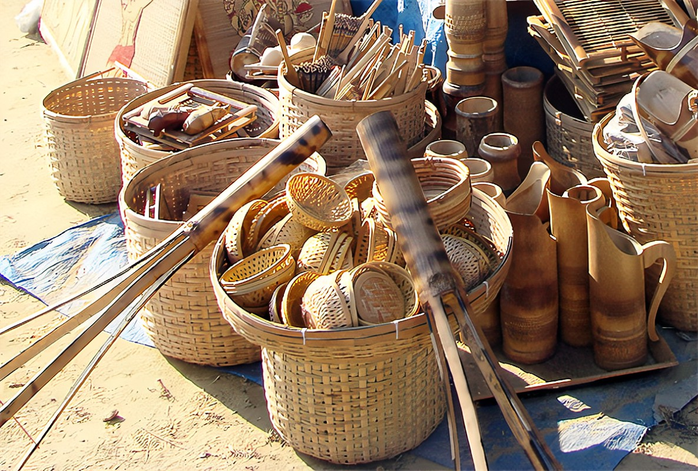

Maharashtra boasts a vibrant array of arts and crafts that reflect its diverse culture and traditions.
Painting:
Warli painting is a traditional tribal art form that originates from the Warli tribe, primarily in Maharashtra, India.
This unique style of painting is known for its simplicity, vibrant imagery, and deep connection to nature and community life.
Paithani Sarees:
Paithani sarees are among the most iconic and luxurious traditional textiles of Maharashtra, embodying the region's rich cultural heritage and artistic craftsmanship.
Originating from the town of Paithan, these sarees have a rich history that dates back over a thousand years, often associated with royalty and affluent families.
Kolhapuri Chappals:
Kolhapuri chappals are traditional handcrafted sandals that originate from the town of Kolhapur in Maharashtra, India. Known for their comfort, durability, and unique designs, these chappals hold cultural significance and are a popular choice both in India and abroad.

Bamboo Craft:
Artisans craft various items from bamboo, including baskets, furniture, and decorative pieces, reflecting the sustainable use of local resources.
Dhokra Craft:
Traditional metal casting using the lost-wax technique, creating beautiful artifacts, jewelry, and decorative items, particularly by tribal artisans.
Pithora Paintings:
Created by the Rathwa tribe, these colorful paintings depict community life and beliefs, often used for ritualistic purposes.
